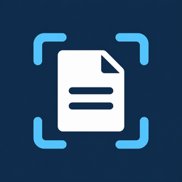
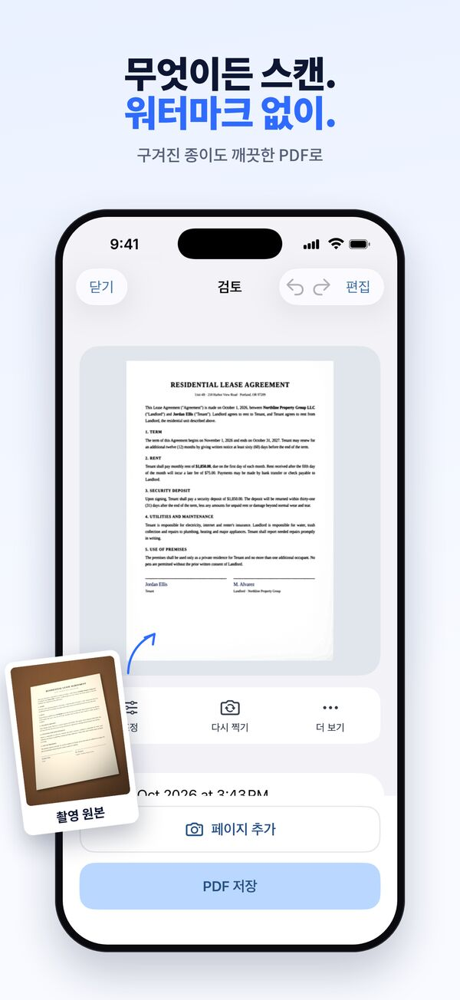
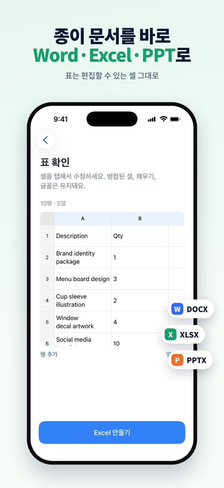
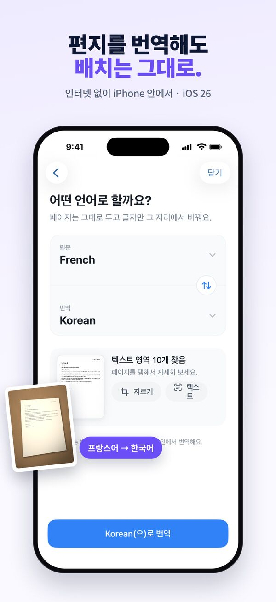
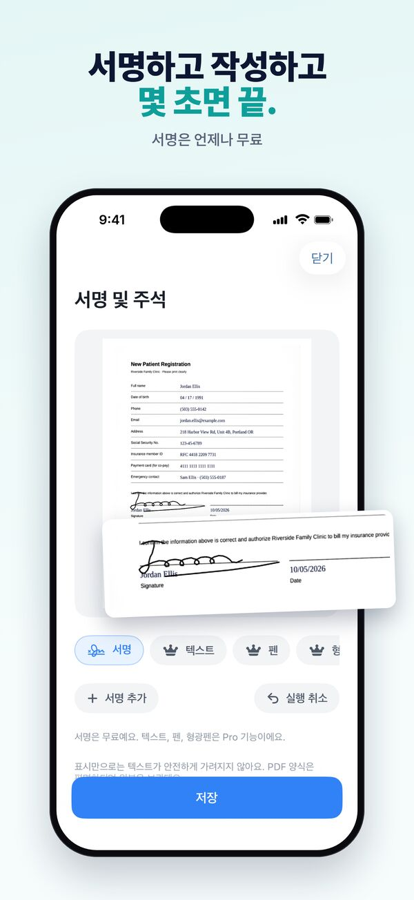
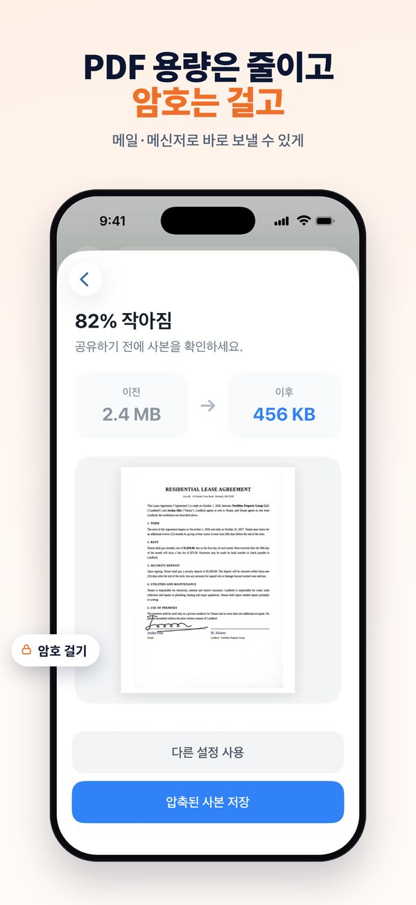
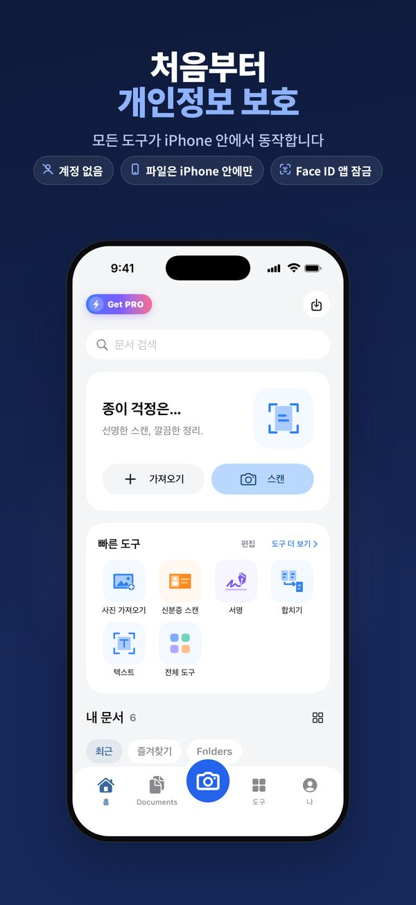

글라이드스캔 (Glide Scan): 아이폰 PDF 스캐너·OCR
인터넷 없이 동작하는 문서 스캐너 앱이에요. 종이를 깨끗한 PDF로 스캔하고, 워드·엑셀로 바꾸고, 글자를 복사하세요. 계정도, 업로드도, 워터마크도 없어요.
App Store에서 Glide Scan 받기스캔은 무료. iPhone, iOS 18 이상.






문서가 아이폰 밖으로 나가지 않는 스캐너
PDF 스캔
테두리 자동 인식, 기울기 보정, 깨끗한 흰 배경. 여러 페이지 PDF, 영수증, 책, 화이트보드, 신분증(앞뒤를 한 장에)까지.
글자 인식 (OCR)
모든 스캔에서 글자를 검색하고 복사하세요. 인터넷 없이 아이폰 안에서 인식해요.
워드·엑셀·파워포인트 변환
종이 문서, 표, 발표 자료를 편집할 수 있는 파일로 바꿔요.
사진 번역
편지나 메뉴판을 원래 배치 그대로 번역해요 (iOS 26 이상).
서명·양식 작성·가리기
서명하고, 양식을 채우고, 보내기 전에 주민등록번호 같은 개인정보를 가려요.
PDF 도구
큰 PDF 압축, 암호 설정, 합치기, 나누기, 페이지 순서 바꾸기.
처음부터 개인정보 보호
모든 도구가 아이폰 안에서 동작해요. 문서를 받는 서버도, 로그인도, 추적도 없어요. Face ID 앱 잠금도 쓸 수 있어요.
무료와 Pro
스캔, PDF 저장, 글자 인식은 무료이고 워터마크도 없어요. Pro 도구는 먼저 무료로 써 볼 수 있어요. Glide Scan Pro는 모든 도구를 제한 없이 열고 광고를 없애요. 월간·연간 구독과 한 번 구매로 계속 쓰는 평생 이용권이 있어요.
자주 묻는 질문
인터넷 없이도 쓸 수 있나요?
네. 스캔, 글자 인식(OCR), 파일 변환, 모든 편집 도구가 아이폰 안에서 동작해요. 문서를 서버로 올리지 않아요.
스캔에 워터마크가 찍히나요?
아니요. 무료로 써도 스캔과 PDF에 워터마크가 없어요. 원할 때만 직접 워터마크를 넣는 도구가 있어요.
회원가입이 필요한가요?
아니요. 로그인이 없어요. 앱을 열고 바로 스캔하면 돼요.
무료인가요?
스캔, PDF 저장, 글자 인식은 무료예요. Glide Scan Pro는 모든 도구를 제한 없이 열고 광고를 없애요.
스캔한 문서를 워드나 엑셀로 바꿀 수 있나요?
네. 아이폰 안에서 편집 가능한 워드, 엑셀, 파워포인트 파일로 바꿔요.
더 많은 답은 지원 페이지(영어)에 있어요.